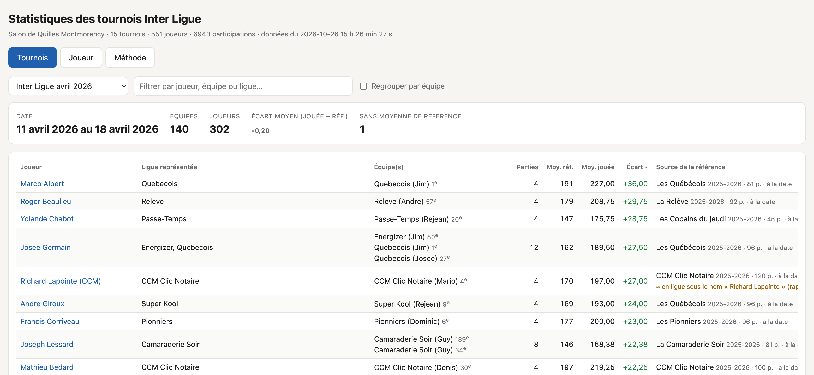
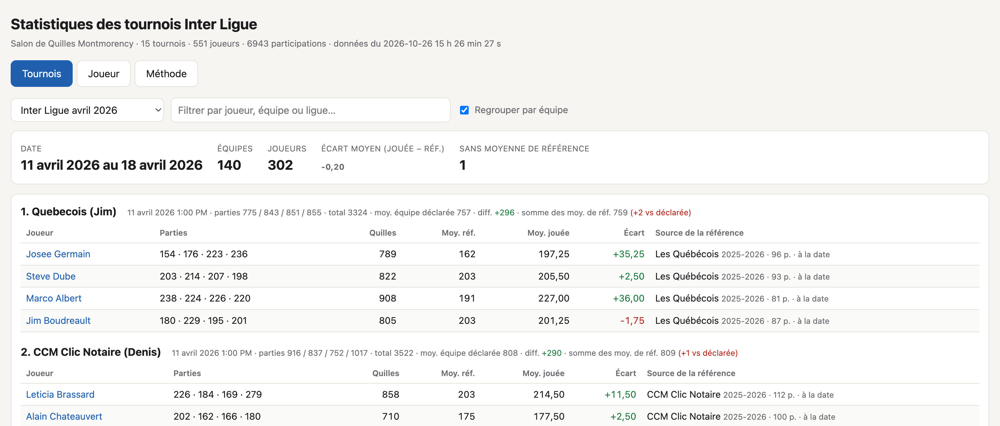
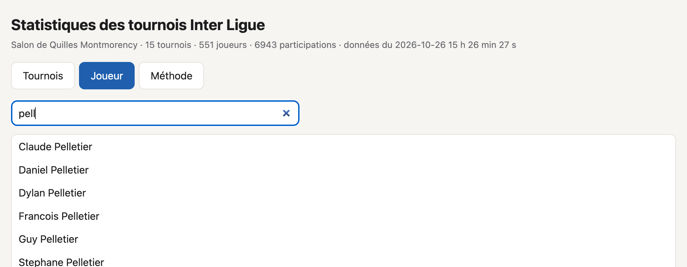
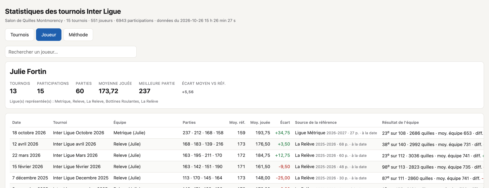
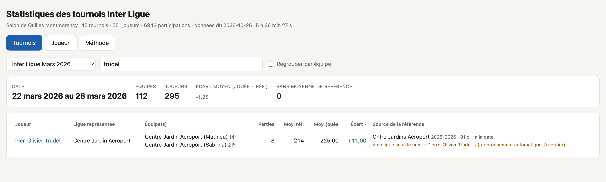

Ce logiciel relève automatiquement les résultats de tous les tournois Inter Ligue publiés sur EZ Lexer / Bowl4U. Il calcule la moyenne de référence de chaque joueur à partir des ligues du salon, et permet de consulter les statistiques par tournoi ou par joueur.
/Users/jean-maurice/Stats Inter LiguePour chaque tournoi dont le nom commence par « Inter Ligue », le logiciel lit sur le site de Lexer :
Lexer publie la moyenne déclarée de l'équipe, mais pas celle de chaque joueur. Le logiciel va donc chercher la moyenne de chaque joueur dans toutes les ligues du salon publiées sur Lexer, telle qu'elle était à la date du tournoi. C'est la moyenne de référence (détails à la section 8).
Il produit ensuite :
| Élément | Rôle |
|---|---|
resultats/rapport.html | Le rapport à consulter (double-clic pour l'ouvrir). |
resultats/participations.csv | Toutes les données, à ouvrir dans Excel ou Numbers. |
resultats/noms-a-verifier.csv | Les noms rapprochés automatiquement, ceux à confirmer (section 10) et les homonymes probables (section 11). |
resultats/donnees.json | Données brutes (usage technique). |
correspondances.tsv | Vos correspondances de noms entre tournoi et ligue (section 10). |
homonymes.tsv | Vos déclarations d'homonymes : même nom, personnes différentes (section 11). |
evenements.tsv | Liste des tournois et des ligues connus (modifiable, voir section 9). |
extraire.mjs, lexer.mjs | Le programme lui-même — ne pas modifier. |
rapport-modele.html | Gabarit du rapport — ne pas modifier. |
guide/ | Source de ce guide et script pour le régénérer. |
cache/ | Copie des pages déjà téléchargées, pour aller plus vite. Ce dossier peut être supprimé sans risque : le prochain passage sera simplement plus long. |
LISEZMOI.md | Aide-mémoire court. |
Faites-le après chaque nouveau tournoi Inter Ligue, ou chaque fois que vous voulez des données à jour.
resultats/rapport.html dans le Finder. S'il était déjà ouvert, rechargez la page
(⌘ + R).Le tout premier passage télécharge plusieurs milliers de pages et prend quelques minutes. Ensuite, les pages déjà lues sont conservées, et seules les pages récentes (saison de ligue en cours, tournois de l'année) sont relues. Une mise à jour normale prend de quelques secondes à environ 3 minutes.
Oui, dans la plupart des cas. À chaque mise à jour, le logiciel vérifie si un tournoi a été publié pour les derniers mois
(adresse du type interligueoctobre2026), ainsi qu'une finale de l'année. À l'automne, il cherche aussi la nouvelle saison de chaque ligue.
Chaque nouvel événement trouvé est signalé par une ligne « + nouvel événement trouvé ». Si un tournoi a une adresse inhabituelle, voyez la section 9.
Si des résultats d'un ancien tournoi ont été corrigés sur Lexer après coup, forcez la relecture complète (plus long) :
node extraire.mjs --rafraichirL'onglet Tournois présente un tournoi à la fois. Le plus récent s'affiche à l'ouverture.

Il donne :
| Colonne | Signification |
|---|---|
| Ligue représentée | La ligue inscrite dans le nom de l'équipe (ex. « Super Kool » pour « Super Kool (Lynda) »). |
| Équipe(s) | Équipe(s) du joueur dans ce tournoi, avec leur position au classement. Un joueur peut jouer pour plusieurs équipes. |
| Parties | Nombre de parties jouées dans le tournoi, toutes équipes confondues. |
| Moy. réf. | Moyenne de référence, tronquée à l'entier (section 8). |
| Moy. jouée | Moyenne réellement jouée dans le tournoi. |
| Écart | Moy. jouée − Moy. réf. En vert : au-dessus de sa moyenne; en rouge : en dessous. |
| Source de la référence | Ligue et saison d'où vient la moyenne de référence, nombre de parties de ligue retenues et méthode (« à la date » ou « saison précédente »). La mention ≈ en ligue sous le nom « … » s'ajoute quand le nom diffère entre le tournoi et la ligue (section 10). « introuvable » signifie qu'aucune ligue ne convient. |
Cochez Regrouper par équipe pour voir chaque équipe dans l'ordre du classement, avec ses joueurs.

La ligne de titre de chaque équipe indique :
Sur l'ensemble des tournois, la somme calculée tombe à 4 quilles près de la moyenne déclarée pour environ 3 équipes sur 4, et à moins de 20 quilles pour 98 % des équipes.
L'onglet Joueur rassemble toutes les statistiques d'un joueur sur l'ensemble des tournois Inter Ligue.
Tapez quelques lettres du prénom ou du nom, puis cliquez sur le bon nom dans la liste. Vous pouvez aussi cliquer sur un nom dans l'onglet Tournois.


Le rapport mémorise le dernier onglet, tournoi et joueur consultés : vous les retrouvez à la prochaine ouverture.
Le fichier resultats/participations.csv contient une ligne par joueur et par équipe, pour tous les tournois. Il s'ouvre
directement dans Excel (double-clic), avec les accents et les décimales à la française. Dans Numbers : Fichier → Ouvrir.
| Colonne | Contenu |
|---|---|
| Tournoi, Date | Nom du tournoi et date de jeu de l'équipe (AAAA-MM-JJ). |
| Équipe, Ligue (équipe) | Nom complet de l'équipe et ligue représentée. |
| Pos. équipe, Moy. équipe déclarée, Total équipe, Diff. équipe | Résultat de l'équipe. |
| Somme des moy. de référence | Somme calculée pour les joueurs de l'équipe (vide si un joueur n'a pas de référence). |
| Joueur, Parties, Quilles, Moyenne jouée | Performance du joueur avec cette équipe. |
| Moyenne de référence, Écart | Moyenne de référence (entière) et écart (jouée − référence). |
| Ligue de référence, Saison, Parties en ligue, Méthode | D'où vient la moyenne de référence. |
| Nom en ligue (si différent) | Nom sous lequel le joueur a été trouvé en ligue, et le type de rapprochement : automatique ou manuel. |
| Autres ligues | Moyennes du joueur dans ses autres ligues admissibles. |
Astuce : dans Excel, sélectionnez la ligne d'en-tête et choisissez Données → Filtrer pour trier et filtrer par tournoi, ligue ou joueur. Vous pouvez aussi créer un tableau croisé dynamique, par exemple pour l'écart moyen par ligue.
Sans ouvrir le rapport, vous pouvez afficher les statistiques d'un joueur. Le Terminal doit être ouvert dans le dossier du logiciel (voir section 3) :
node extraire.mjs joueur "Guy Pelletier"Une partie du nom suffit : « pelletier » affiche tous les Pelletier. Exemple de réponse :
Guy Pelletier — 15 tournois, 220 parties, moyenne jouée 194.96 2024-10-20 Inter Ligue Octobre 2024 CCM Subaru (G. Pelletier 2) jouée 183.25 réf. 198 (CCM Subaru 2024-2025, à la date) écart -14.75 équipe : 30e, 3274 quilles, moy. déclarée 809, diff. +38 …Cette commande utilise les données de la dernière mise à jour. Elle ne télécharge rien.
Comme Lexer ne publie pas la moyenne déclarée de chaque joueur, le logiciel l'établit à partir des ligues du Salon de Quilles Montmorency publiées sur Lexer, selon la règle suivante :
La moyenne retenue est tronquée à l'entier (197,86 devient 197), comme une moyenne de ligue. L'écart = moyenne jouée au tournoi − moyenne de référence.
Le joueur est recherché dans les ligues sous son nom exact (sans tenir compte des accents ni des majuscules). Si ce nom n'existe pas, le logiciel essaie un nom proche (section 10).
L'onglet Méthode du rapport rappelle cette règle.
La liste des événements connus se trouve dans evenements.tsv. Ouvrez-la avec TextEdit (clic droit → Ouvrir avec → TextEdit).
Chaque ligne contient trois éléments séparés par une tabulation :
| Élément | Description |
|---|---|
| Nom | Le nom affiché dans le rapport. |
| Adresse | La fin de l'adresse des résultats sur Lexer (voir ci-dessous). |
| Type | interligue pour un tournoi Inter Ligue, ligue pour une saison de ligue (utilisée pour les moyennes),
autre pour un événement à ignorer. |
https://bowling.lexerbowling.com/salondequillesmontmorency/interligueavril2026.
L'adresse à inscrire est la dernière partie, en gras.Enregistrez le fichier, puis relancez node extraire.mjs.
Il arrive qu'un joueur soit écrit d'une façon au tournoi et d'une autre dans sa ligue : « Chrisitan Mercier » au lieu de « Christian Mercier », « Pier-Olivier » au lieu de « Pierre-Olivier », « Richard Lapointe (Bot) » au lieu de « Richard Lapointe ». Le logiciel gère ces cas de deux façons.
Quand le nom du tournoi n'existe pas tel quel dans les ligues, le logiciel cherche un nom très proche :
Dans le rapport, la source de la référence porte alors la mention ≈ en ligue sous le nom « … » (rapprochement automatique, à vérifier) :

À chaque mise à jour, le fichier resultats/noms-a-verifier.csv (à ouvrir dans Excel) liste les noms concernés, avec un statut :
| Statut | Signification et action |
|---|---|
| rapproché automatiquement | Le logiciel a trouvé le joueur sous un autre nom. Vérifiez rapidement que c'est la bonne personne. Si c'est une erreur, bloquez le rapprochement (voir plus bas). |
| rapproché, moins de 20 parties | Le joueur a bien été trouvé, mais il n'avait pas 20 parties. Aucune action n'est nécessaire. |
| à confirmer | Plusieurs noms proches existent, et le logiciel ne sait pas lequel choisir. Indiquez le bon dans correspondances.tsv. |
| homonyme probable | Le même nom figure dans des ligues qui suggèrent deux personnes différentes (section 11). |
Le fichier correspondances.tsv, dans le dossier du logiciel, vous permet d'imposer une correspondance. Ouvrez-le avec TextEdit.
Écrivez une ligne par joueur : le nom tel qu'il est écrit au tournoi, une tabulation, puis le nom tel qu'il est écrit dans la ligue.
# sont des commentaires et sont ignorées.noms-a-verifier.csv ou depuis le rapport pour éviter les fautes.Enregistrez le fichier, puis relancez node extraire.mjs (quelques secondes, tout vient du cache).
Lexer ne donne aucun identifiant de joueur, seulement son nom. Par défaut, un même nom présent dans plusieurs ligues est donc considéré comme une seule personne, et la plus haute de ses moyennes est retenue. C'est le bon choix dans la grande majorité des cas, car beaucoup de joueurs jouent dans plusieurs ligues. Quand deux personnes différentes portent le même nom, il faut l'indiquer au logiciel.
À chaque mise à jour, le logiciel signale dans resultats/noms-a-verifier.csv, avec le statut homonyme probable,
les noms de joueurs des tournois qui présentent l'un de ces indices (colonne Détail) :
Le logiciel ne sépare rien de lui-même. Il signale seulement les cas probables, et c'est vous qui décidez.
Ouvrez homonymes.tsv avec TextEdit. Chaque ligne décrit une personne : son nom, une tabulation, puis ses ligues
séparées par des virgules.
Enregistrez le fichier, puis relancez node extraire.mjs.
correspondances.tsv (section 10).Tant qu'ils ne sont pas déclarés dans homonymes.tsv (section 11), deux personnes du même nom sont confondues, et la plus haute de leurs
moyennes pourrait être retenue. En cas de doute, la colonne Source de la référence indique la ligue utilisée.
| Message | Que faire |
|---|---|
command not found: node | Installer Node.js depuis nodejs.org (version LTS). |
ENOENT … evenements.tsv | Le Terminal n'est pas dans le bon dossier : refaire l'étape 1 de la section 3. |
fetch failed ou HTTP 5xx | Problème de connexion, ou site Lexer indisponible : réessayer plus tard. Les pages déjà en cache ne sont pas perdues. |
! … pages introuvables | L'adresse inscrite dans evenements.tsv est erronée, ou l'événement a été retiré de Lexer. |
| Le rapport ne montre pas le dernier tournoi | Relancer node extraire.mjs, puis recharger le rapport (⌘ + R). Si le tournoi n'est toujours pas trouvé, l'ajouter à la main (section 9). |
| Une correspondance n'est pas prise en compte | Vérifier que les deux noms sont séparés par une tabulation (pas des espaces) et que le nom au tournoi est écrit exactement comme dans le rapport. |
| Commande | Effet |
|---|---|
node extraire.mjs | Met à jour les données et régénère le rapport et les fichiers Excel. |
node extraire.mjs --rafraichir | Même chose, en retéléchargeant toutes les pages. |
node extraire.mjs joueur "Nom" | Affiche les statistiques d'un joueur dans le Terminal. |
zsh guide/generer-guide.sh | Régénère ce guide (captures et PDF) à partir des données actuelles. |